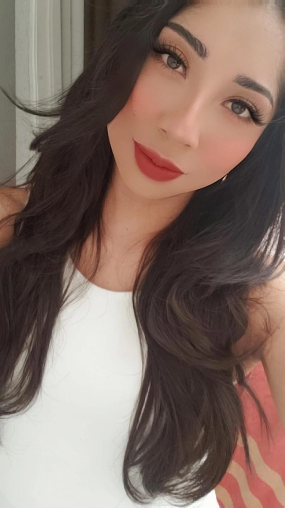

Perla Yamiled Natividad Ruiz
Mi nombre es Perla, tengo 22 años, nací el 22 de Marzo de 2001 en Huamantla, Tlaxcal, tengo 2 hermanos mayores que yo, mi colore favorito es el azul, me encanta bailar, pintar, escuchar música y modelar, también disfruto mucho maquillar e ir a sesiones fotográficas. Tengo una mascota, un perrito pug de 4 años, llamado Panchito, el cual fue mi regalo de 18 años, Mi pasatiempo favorito es bailar salsa e ir de compras, disfrutomucho pasar tiempo con mi familia, en especial con mi mamá y mis hermanos, mi artista favorito es Carlos Rivera, y Ed Sheeran, me gusta mucho visitar el lugar donde nací, pues hace 7 años que me mudé a Puebla, y dejé a muchas personas que quiero allá, pero soy fiel creyente de que todo pasa por algo, y de que cualquier cambio es para bien.Actualmente me encuentro estudiando el 7° semestre de la universidad en la Benemérita Universidad Autónoma de Puebla, la carrera de Diseño Gráfico, pues me gusta mucho ser creativa e innovar con el arte.